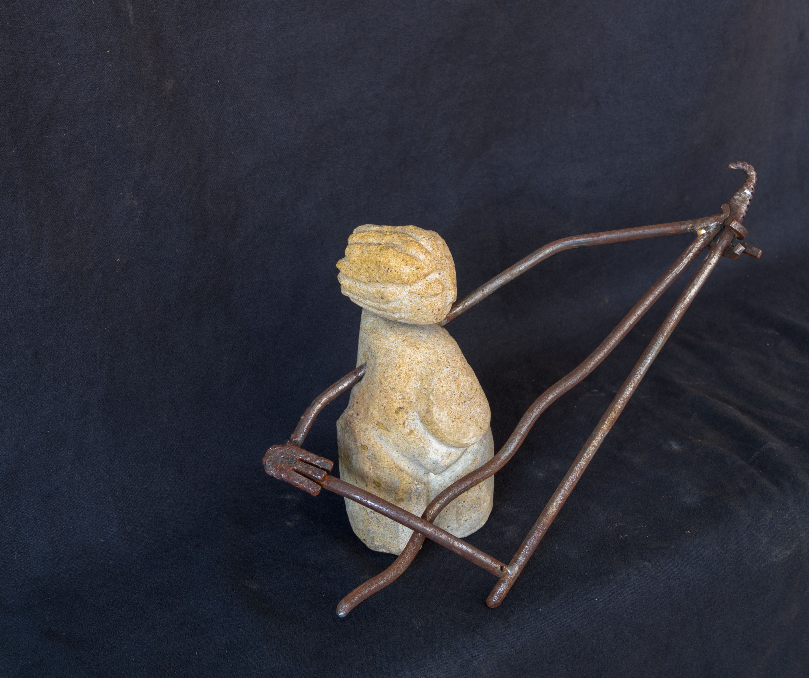
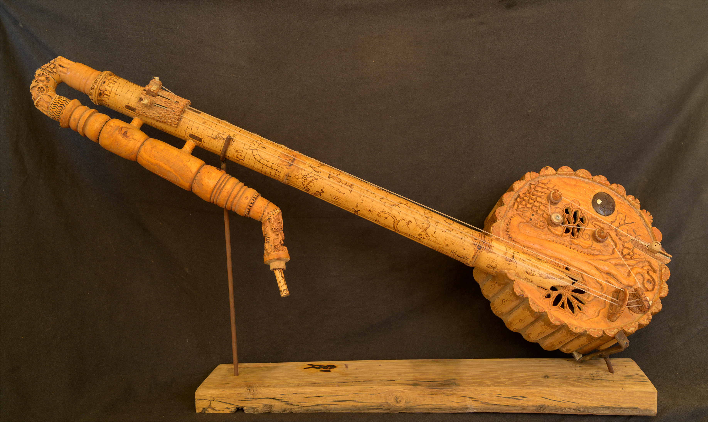

De ondas. Madera – Hierro – Cerámica. Talla y forja.
La Veritá.(95*15*10)
De ondas. Escultura. ) Piedra – Hierro. Talla y forja.
Amazona chelista.(17*30*10)
De ondas. Madera- Hueso- Coco. Talla y pirograbado. Flauta y cuerda
La ofrenda. (62*34*13)
De ondas. Madera – Coco – Hueso. Talla y pirograbado. Viento y cuerda.
Las dos culturas.(90*25*20)
Serie Prehistoria. Relieve en aluminio. Fundición 75x37 mm.
Mujer recolectando miel. Basado en la cueva de la Araña, Valencia.
Serie Prehistoria. Relieve en aluminio. Fundición 75x37 mm.
Guerrero.
Serie Prehistoria. Relieve en aluminio. Fundición 75x37 mm.
Cazador.
Serie Prehistoria. Relieve en aluminio. Fundición 75x37 mm.
Mujer bailando. Cueva de Cogull, Lleida.
Creatividad diversa. Tela e hilo. Bordado.
Pavón.(15 cm. diam.)
Creatividad diversa. Acuarela sobre papel.
Calas.(21*28)
Creatividad diversa. Acuarela sobre papel. Film transparente
Tulipán.(36*25)
Creatividad diversa. Carboncillo y tiza sobre papel.
Cerezas.(40,5*24,5)
Creatividad diversa. Acrílico empastado.
Puesta de sol sobre un puente.(40,5*24,5)

Título obra Rosa
Realismo figurado. Óleo sobre lienzo.
“Jinete y amazona” (40x50cm)
Realismo figurado. Óleo sobre lienzo.
“Dos muchachas en la playa” (40x50cm)
Realismo figurado. Óleo sobre tabla.
“El niño de los jilgueros” (30x40cm)(36*25)
Realismo figurado. Óleo sobre lienzo.
“Antes de la corrida” (33x46cm)
Realismo figurativo. Oleo sobre lienzo.
"El pescador y la sirena" (50x65 cm)
Realismo figurativo. Óleo sobre lienzo.
"Celos" (73x92 cm)


Título obra Antonio
Artesanía social. Tela e hilo. Patchwork.
Manta.(150*200cm.). Amalia García
Artesanía social. Esparto.
Cesto. JuanJosé Romero
Artesanía social. Palma, caña y cinta de embalar. Técnica mixta
Cesto. JuanJosé Romero
Artesanía social. Toniza,palma, alambre y cinta macramé. Técnica mixta.
Sombrero. JuanJosé Romero
Creatividad diversa. Rehabilitación.
Silla. Angelita Gutiérrez